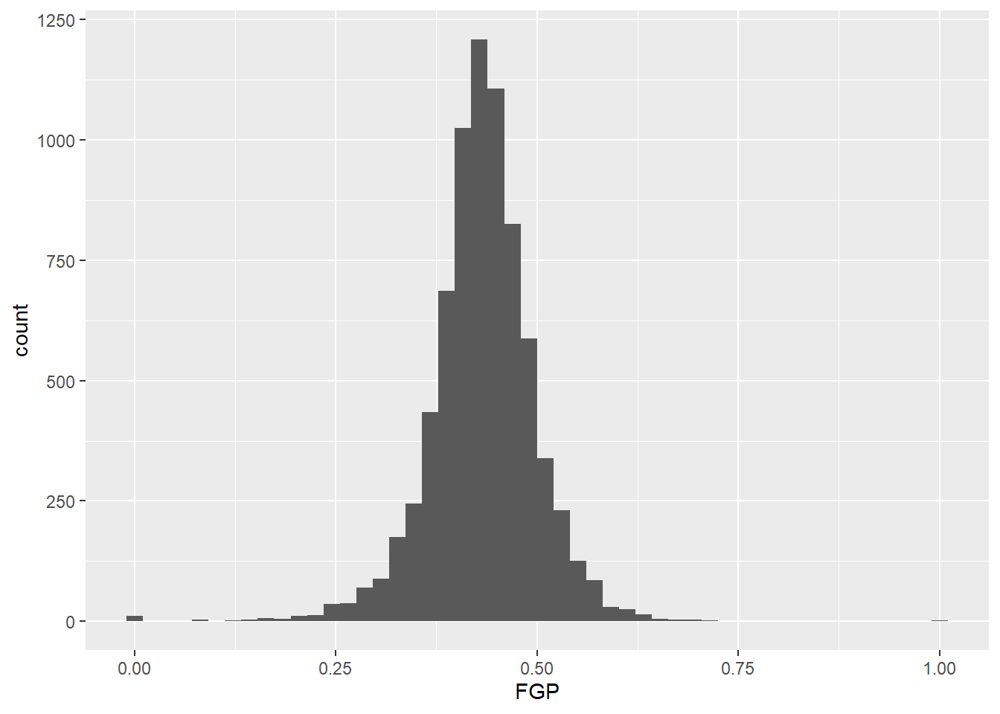
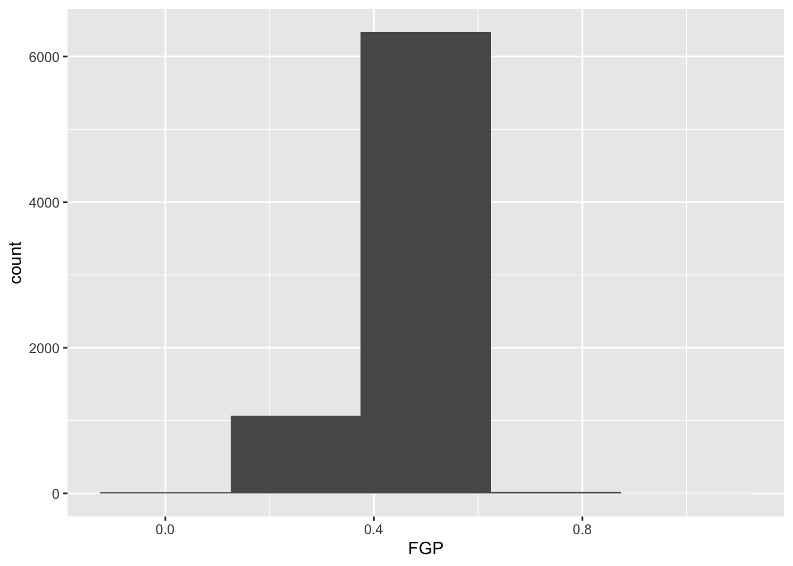
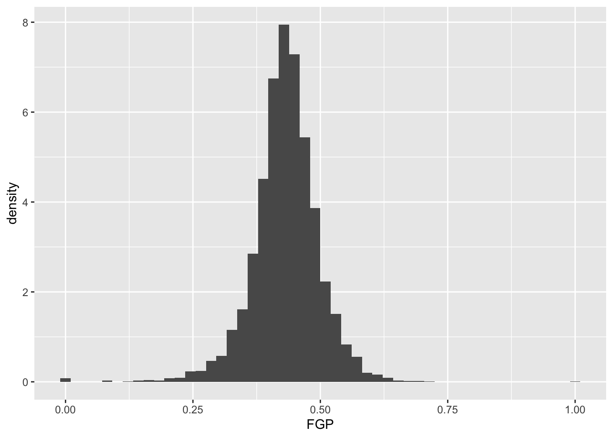
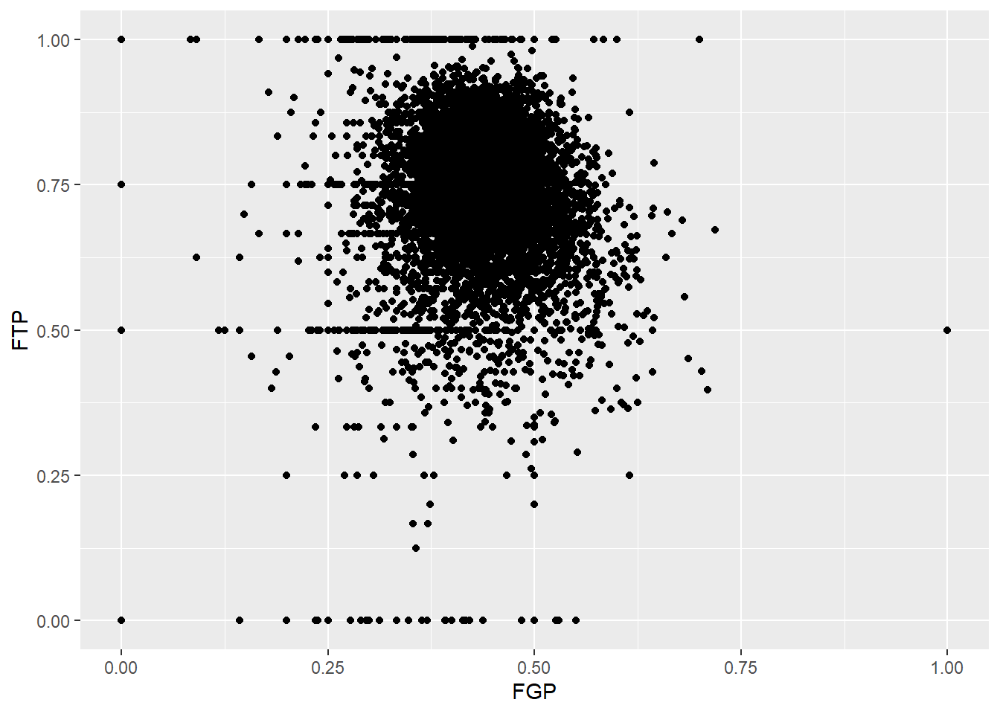
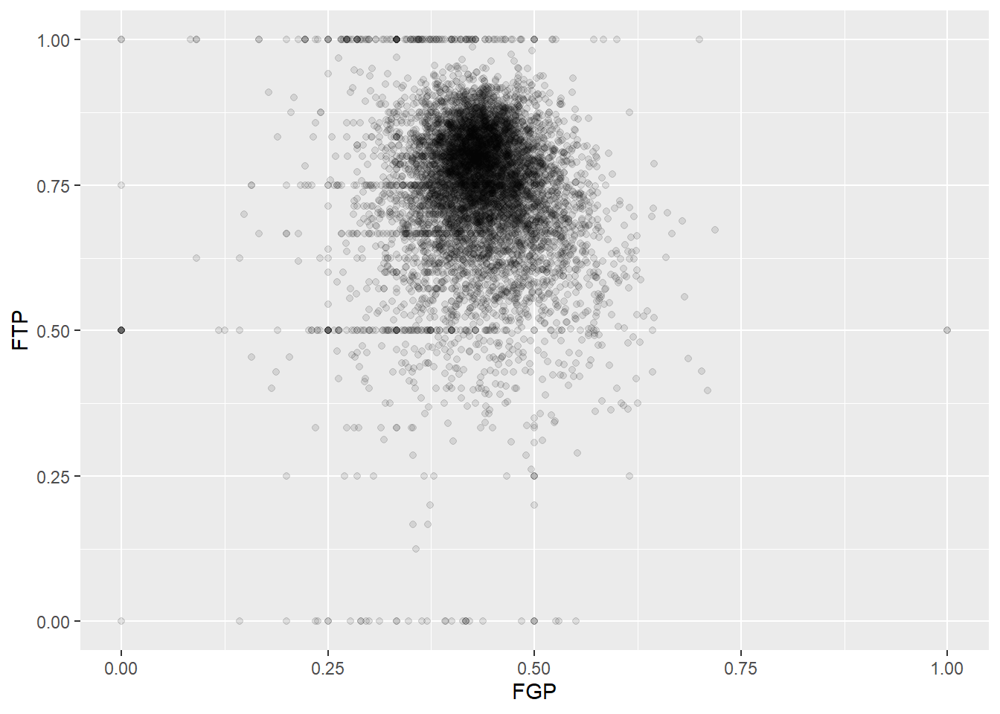
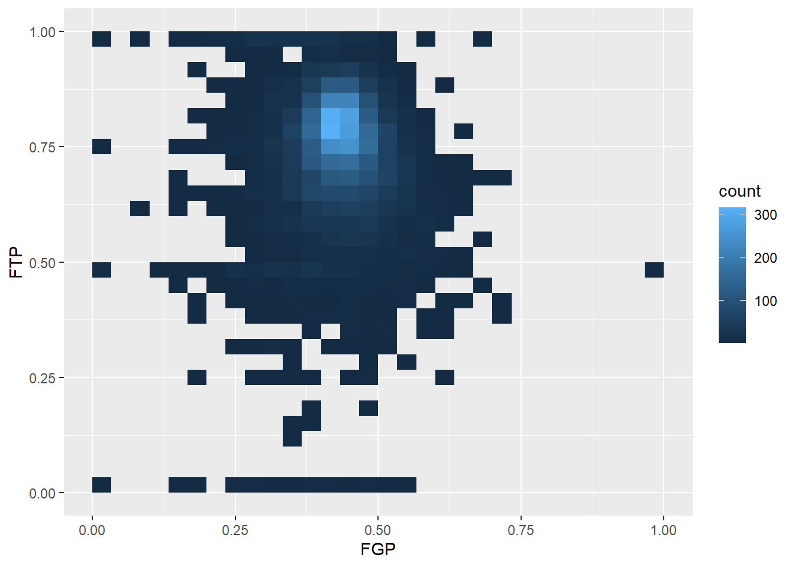
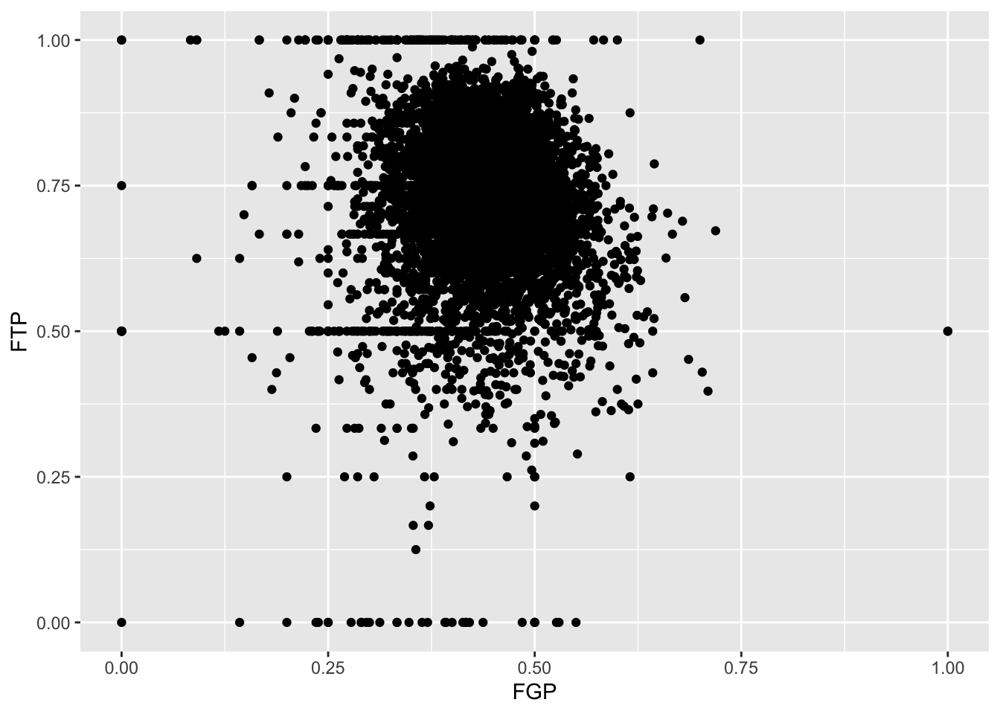
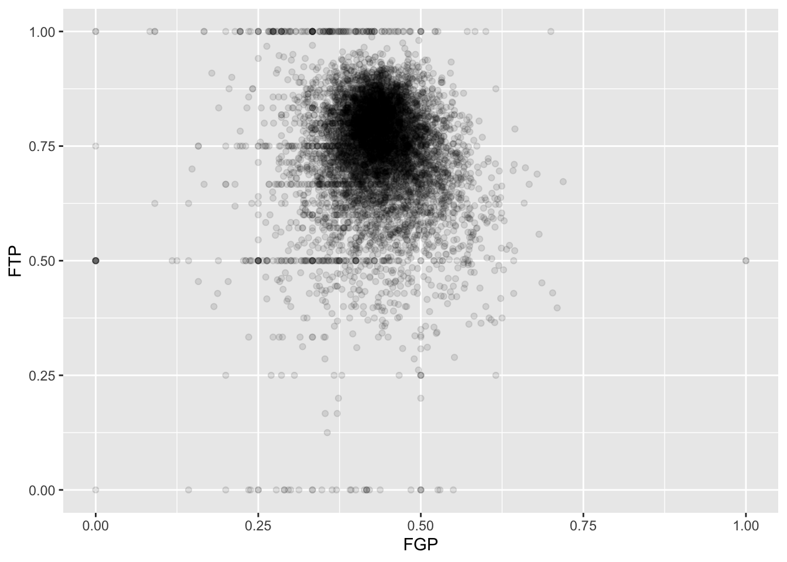
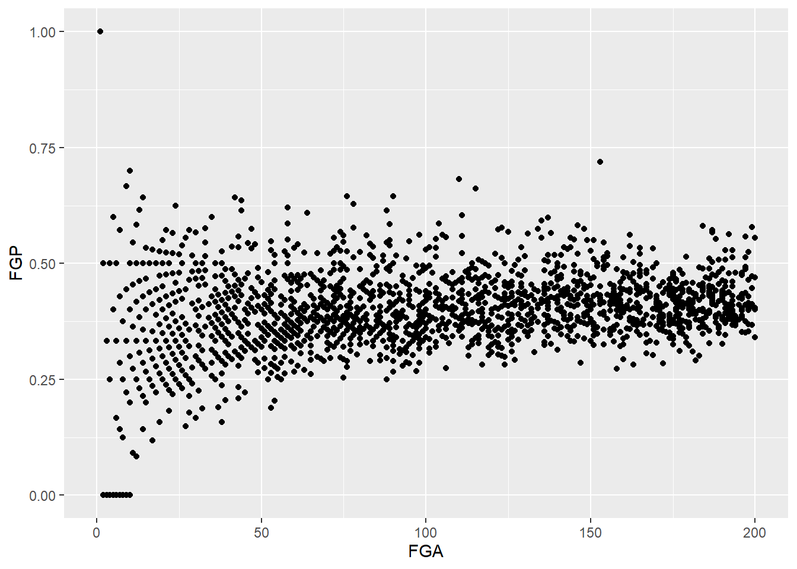

We’re going to pick up right where we left off yesterday in Problem Set 1, where you wrote a script to create a tbl containg several shooting statistics for NBA players between the 1996-97 season and the 2015-16 season. Your script should look something like what is the code block below. For reasons that will become clear shortly, we are going to call our tbl raw_shooting.
> library(tidyverse)
> raw_shooting <- read_csv(file = "data/nba_shooting.csv")
Parsed with column specification:
cols(
PLAYER = col_character(),
SEASON = col_double(),
FGM = col_double(),
FGA = col_double(),
TPM = col_double(),
TPA = col_double(),
FTM = col_double(),
FTA = col_double()
)
> raw_shooting <-
+ mutate(raw_shooting,
+ FGP = FGM/FGA,
+ TPP = TPM/TPA,
+ FTP = FTM/FTA,
+ eFGP = (FGM + 0.5 * TPM)/(FGA),
+ PTS = FTM + 2 * FGM + TPM,
+ TSP = PTS/(2 * (FGA + 0.44 * FTA)))
> nba_shooting <- arrange(raw_shooting, desc(TSP))We will use visualization to answer some questions about the data. Specifically, we will study the distribution of the individual columns as well as try to understand the relationship between pairs of variables. For instance, is a player’s free throw percentage predictive of his three point percentage?
To produce graphics throughout this course, we will use ggplot2, which is a package contained in the tidyverse. At a very high level, ggplot2 works by layering graphics, adding different features one on top of another. You can learn much much more about ggplot2 here. We will cover some of the more advanced functionality of ggplot2 in
As you saw in Prof. Wyner’s lectures, histograms are a powerful way to describe a single dataset.
The first bit of the code above, ggplot(data = nba_shooting) tells R to create a coordinate system to which can add additional layers. It also tells R that the data to be plotted is coming from the tibble nba_shooting. The next part of the code, + geom_histogram(mapping = aes(FGP), bins = 5) tells R to add a layer to the blank plot, in this case a histogram of field goal percentage that uses 5 bins. The first argument is the mapping, which defines how each variable in our dataset is mapped to visual components of the graph (the aesthetics) In the case of a histogram, we really only need to tell R that the variable we want to visualize goes on the horizontal (x) axis. To improve readability, we have divided the code to produce the historgram over two lines. It is very important when using ggplot to have the + sign at the end of the line.
In the code above, we also told R how many bins into which to divide the data. We can vary the number of bins to get a higher-resolution view of our data. For instance, we can use 50 bins: 
Instead of specifying the number of bins, which can sometimes be difficult, we could instead specify the width of the bins. For instance, we could split our data into bins of width 0.05 as follows:

It is often preferable to use a density histogram instead of a frequency histogram. This is because the areas of the density histogram boxes always sums to 1 no matter how much data you have.
 Visually, the histograms look identical but now the vertical (y) axis has a different scale.
While examining one variable (i.e. column of our data table) is useful, we are often more interested in understanding the relationships between multiple variables. For instance, how do you think a player’s free throw percentage (FTP) is related to his field goal percentage (FGP)?
To make a scatterplot in R, we can run the following code. Notice that it is very similar to the code used to make histograms, but with a few important differences

Just like the code used to produce the histograms above, we began by calling ggplot(data = nba_shooting). Now, however, instead of calling geom_histogram() we are calling geom_point(). This tells R that instead of a histogram, we want to plot the data using points. We will learn much more about the different “geom” objects available in ggplot2 in Lecture 4. Since we are plotting multiple variables, we need to tell R to which axis each variable is mapped. This is exactly whatmapping = aes(x = FGP, y = FTP) does.
Immediately, we notice a few things about the figure. First, we see what appears to be a big black cloud of points in the middle of the plotting region. This is a result of R trying to plot lots and lots of data points in a small region of the plane. Additionally, we find a few rather interesting data points, corresponding to players who have never made a field goal but are perfect free throw shooters and to players who have never missed a field goal but have made only 50% of their free throws. A major drawback of this scatterplot is its inability to show the relative density of points. That is, does the point at (1.00, 0.50) correspond to a single player or does it correspond to multiple ones?
One way to address this is to use alpha-blending to change the transparency of each point. When there are many points plotted in the same region, that region will appear darker.

Now we can start to distinguish the number of players represented by each point. The fact that the point at (0.00, 0.50) is much darker than the point at (0.00, 1.00) indicates that there are more players who missed every one of their field goal attempts and made 50% of their free throws than players who missed every field goal but made every free throw.
To get an even better idea, we can make a heatmap, which you can think of as a two-dimensional analog of a histogram. To form a heatmap, you start by dividing the plane into lots of evenly-sized two-dimensional bins and counting the number of datapoints within each bin. You then color the bin according to the count. While you can conceptually make the bins any shape you want, there are two popular conventions: rectangular binning and hexagonal binning. For the purposes of this course, we will focus on rectangular binning, using the geom_bin2d() function.

We can increase the number of bins to get a much more high-resolution view of our data.

Now we are starting to get some sense that there are some outliers in our data. We can confirm this visually in another way

Sometimes, we don’t want to look at the entire range of the data and only want to plot a smaller window. We can do this by changing the x and y limits of the plotting region
> ggplot(data = raw_shooting) + geom_point(aes(x = FGA, y = FGP)) + xlim(0, 200)
Warning: Removed 5346 rows containing missing values (geom_point).
By this point, it should be clear that there are a number of rather curious features in our dataset. For instance, there seem to be several players who have never made a field goal but have made every one of their free throw attempts. After re-arranging our tbl according to the number of field goals made, it is clear that we have several players who have attempted fewer than 5 field goals in a single season. Before examining the relationship between a player’s field goal percentage and free throw percentage, we’d like to remove all of the players who have not attempted many of each type of shot.
The function filter() is used to pull out subsets of observations that satisfy some logical condition like “FGA > 100” or “FGA > 100 and FTA > 50”. To make such comparisons in R, we have the following operators available at our disposal:
== for “equal to”!= for “not equal to”< and <= for “less than” and “less than or equal to”> and >= for “greater than” and “greater than or equal to”&, |, ! for “AND” and “OR” and “NOT” The code below filter out all of the players with at least 100 field goals in a single season> filter(raw_shooting, FGA > 100)
# A tibble: 6,295 x 14
PLAYER SEASON FGM FGA TPM TPA FTM FTA FGP TPP FTP eFGP PTS TSP
<chr> <dbl> <dbl> <dbl> <dbl> <dbl> <dbl> <dbl> <dbl> <dbl> <dbl> <dbl> <dbl> <dbl>
1 Stephen Curry 2016 805 1597 402 887 363 400 0.504 0.453 0.908 0.630 2375 0.670
2 James Harden 2016 710 1617 236 657 720 837 0.439 0.359 0.860 0.512 2376 0.598
3 Kevin Durant 2016 698 1381 186 480 447 498 0.505 0.388 0.898 0.573 2029 0.634
4 DeMarcus Cousins 2016 601 1332 70 210 476 663 0.451 0.333 0.718 0.477 1748 0.538
5 LeBron James 2016 737 1416 87 282 359 491 0.520 0.309 0.731 0.551 1920 0.588
6 Damian Lillard 2016 618 1474 229 610 414 464 0.419 0.375 0.892 0.497 1879 0.560
7 Anthony Davis 2016 560 1137 35 108 326 430 0.493 0.324 0.758 0.508 1481 0.558
8 Russell Westbrook 2016 656 1444 101 341 465 573 0.454 0.296 0.812 0.489 1878 0.554
9 DeMar DeRozan 2016 614 1377 47 139 555 653 0.446 0.338 0.850 0.463 1830 0.550
10 Paul George 2016 605 1448 210 565 454 528 0.418 0.372 0.860 0.490 1874 0.558
# … with 6,285 more rowsWhen we run this code, you’ll notice that R prints out a tbl with 6,295 rows.
We can also filter on more complicated conditions constructed using the AND, OR, and NOT operators: &, |, and !. For instance, to filter observations with at least 100 field goal attempts OR 50 three point attempts, we would do
> filter(raw_shooting, FGA >= 100 | TPA >= 50)
# A tibble: 6,328 x 14
PLAYER SEASON FGM FGA TPM TPA FTM FTA FGP TPP FTP eFGP PTS TSP
<chr> <dbl> <dbl> <dbl> <dbl> <dbl> <dbl> <dbl> <dbl> <dbl> <dbl> <dbl> <dbl> <dbl>
1 Stephen Curry 2016 805 1597 402 887 363 400 0.504 0.453 0.908 0.630 2375 0.670
2 James Harden 2016 710 1617 236 657 720 837 0.439 0.359 0.860 0.512 2376 0.598
3 Kevin Durant 2016 698 1381 186 480 447 498 0.505 0.388 0.898 0.573 2029 0.634
4 DeMarcus Cousins 2016 601 1332 70 210 476 663 0.451 0.333 0.718 0.477 1748 0.538
5 LeBron James 2016 737 1416 87 282 359 491 0.520 0.309 0.731 0.551 1920 0.588
6 Damian Lillard 2016 618 1474 229 610 414 464 0.419 0.375 0.892 0.497 1879 0.560
7 Anthony Davis 2016 560 1137 35 108 326 430 0.493 0.324 0.758 0.508 1481 0.558
8 Russell Westbrook 2016 656 1444 101 341 465 573 0.454 0.296 0.812 0.489 1878 0.554
9 DeMar DeRozan 2016 614 1377 47 139 555 653 0.446 0.338 0.850 0.463 1830 0.550
10 Paul George 2016 605 1448 210 565 454 528 0.418 0.372 0.860 0.490 1874 0.558
# … with 6,318 more rowsWe may combine these constraints by enclosing them in parantheses.
> filter(raw_shooting, (FGA >= 100 & TPA >= 50) | (FGP >= 0.45 & FGP <= 0.5))
# A tibble: 4,837 x 14
PLAYER SEASON FGM FGA TPM TPA FTM FTA FGP TPP FTP eFGP PTS TSP
<chr> <dbl> <dbl> <dbl> <dbl> <dbl> <dbl> <dbl> <dbl> <dbl> <dbl> <dbl> <dbl> <dbl>
1 Stephen Curry 2016 805 1597 402 887 363 400 0.504 0.453 0.908 0.630 2375 0.670
2 James Harden 2016 710 1617 236 657 720 837 0.439 0.359 0.860 0.512 2376 0.598
3 Kevin Durant 2016 698 1381 186 480 447 498 0.505 0.388 0.898 0.573 2029 0.634
4 DeMarcus Cousins 2016 601 1332 70 210 476 663 0.451 0.333 0.718 0.477 1748 0.538
5 LeBron James 2016 737 1416 87 282 359 491 0.520 0.309 0.731 0.551 1920 0.588
6 Damian Lillard 2016 618 1474 229 610 414 464 0.419 0.375 0.892 0.497 1879 0.560
7 Anthony Davis 2016 560 1137 35 108 326 430 0.493 0.324 0.758 0.508 1481 0.558
8 Russell Westbrook 2016 656 1444 101 341 465 573 0.454 0.296 0.812 0.489 1878 0.554
9 DeMar DeRozan 2016 614 1377 47 139 555 653 0.446 0.338 0.850 0.463 1830 0.550
10 Paul George 2016 605 1448 210 565 454 528 0.418 0.372 0.860 0.490 1874 0.558
# … with 4,827 more rowsWhat if we wanted to pull out the observations corresponding to the 2015-16 and 2014-15 season. We could do something like filter(raw_shooting, (SEASON == 2016) | (SEASON == 2015)), which would be perfectly fine. However, what if we wanted data from 1998-99, 2011-12, and 2015-16? Typing a lot of expressions like SEASON == ... would be rather tedious. The %in% operator lets us avoid this tedium:
> filter(raw_shooting, SEASON %in% c(1999, 2012, 2016))
# A tibble: 1,150 x 14
PLAYER SEASON FGM FGA TPM TPA FTM FTA FGP TPP FTP eFGP PTS TSP
<chr> <dbl> <dbl> <dbl> <dbl> <dbl> <dbl> <dbl> <dbl> <dbl> <dbl> <dbl> <dbl> <dbl>
1 Stephen Curry 2016 805 1597 402 887 363 400 0.504 0.453 0.908 0.630 2375 0.670
2 James Harden 2016 710 1617 236 657 720 837 0.439 0.359 0.860 0.512 2376 0.598
3 Kevin Durant 2016 698 1381 186 480 447 498 0.505 0.388 0.898 0.573 2029 0.634
4 DeMarcus Cousins 2016 601 1332 70 210 476 663 0.451 0.333 0.718 0.477 1748 0.538
5 LeBron James 2016 737 1416 87 282 359 491 0.520 0.309 0.731 0.551 1920 0.588
6 Damian Lillard 2016 618 1474 229 610 414 464 0.419 0.375 0.892 0.497 1879 0.560
7 Anthony Davis 2016 560 1137 35 108 326 430 0.493 0.324 0.758 0.508 1481 0.558
8 Russell Westbrook 2016 656 1444 101 341 465 573 0.454 0.296 0.812 0.489 1878 0.554
9 DeMar DeRozan 2016 614 1377 47 139 555 653 0.446 0.338 0.850 0.463 1830 0.550
10 Paul George 2016 605 1448 210 565 454 528 0.418 0.372 0.860 0.490 1874 0.558
# … with 1,140 more rowsWe could also filter out data from the two lockout-shortened seasons, 1998-99 and 2011-12 using a combination of the NOT ! operator and %in%.
> filter(raw_shooting, !SEASON %in% c(1999, 2012))
# A tibble: 6,721 x 14
PLAYER SEASON FGM FGA TPM TPA FTM FTA FGP TPP FTP eFGP PTS TSP
<chr> <dbl> <dbl> <dbl> <dbl> <dbl> <dbl> <dbl> <dbl> <dbl> <dbl> <dbl> <dbl> <dbl>
1 Stephen Curry 2016 805 1597 402 887 363 400 0.504 0.453 0.908 0.630 2375 0.670
2 James Harden 2016 710 1617 236 657 720 837 0.439 0.359 0.860 0.512 2376 0.598
3 Kevin Durant 2016 698 1381 186 480 447 498 0.505 0.388 0.898 0.573 2029 0.634
4 DeMarcus Cousins 2016 601 1332 70 210 476 663 0.451 0.333 0.718 0.477 1748 0.538
5 LeBron James 2016 737 1416 87 282 359 491 0.520 0.309 0.731 0.551 1920 0.588
6 Damian Lillard 2016 618 1474 229 610 414 464 0.419 0.375 0.892 0.497 1879 0.560
7 Anthony Davis 2016 560 1137 35 108 326 430 0.493 0.324 0.758 0.508 1481 0.558
8 Russell Westbrook 2016 656 1444 101 341 465 573 0.454 0.296 0.812 0.489 1878 0.554
9 DeMar DeRozan 2016 614 1377 47 139 555 653 0.446 0.338 0.850 0.463 1830 0.550
10 Paul George 2016 605 1448 210 565 454 528 0.418 0.372 0.860 0.490 1874 0.558
# … with 6,711 more rowsFor the remainder of this module, we will focus on the players who attempted at least 100 field goals, 100 free throws, 50 three pointers in the non-lockout seasons.
> nba_shooting <- filter(raw_shooting, (FGA >= 100 & FTA >= 100 & TPA >= 50 & !SEASON %in% c(1999, 2012)))
> nba_shooting
# A tibble: 2,254 x 14
PLAYER SEASON FGM FGA TPM TPA FTM FTA FGP TPP FTP eFGP PTS TSP
<chr> <dbl> <dbl> <dbl> <dbl> <dbl> <dbl> <dbl> <dbl> <dbl> <dbl> <dbl> <dbl> <dbl>
1 Stephen Curry 2016 805 1597 402 887 363 400 0.504 0.453 0.908 0.630 2375 0.670
2 James Harden 2016 710 1617 236 657 720 837 0.439 0.359 0.860 0.512 2376 0.598
3 Kevin Durant 2016 698 1381 186 480 447 498 0.505 0.388 0.898 0.573 2029 0.634
4 DeMarcus Cousins 2016 601 1332 70 210 476 663 0.451 0.333 0.718 0.477 1748 0.538
5 LeBron James 2016 737 1416 87 282 359 491 0.520 0.309 0.731 0.551 1920 0.588
6 Damian Lillard 2016 618 1474 229 610 414 464 0.419 0.375 0.892 0.497 1879 0.560
7 Anthony Davis 2016 560 1137 35 108 326 430 0.493 0.324 0.758 0.508 1481 0.558
8 Russell Westbrook 2016 656 1444 101 341 465 573 0.454 0.296 0.812 0.489 1878 0.554
9 DeMar DeRozan 2016 614 1377 47 139 555 653 0.446 0.338 0.850 0.463 1830 0.550
10 Paul George 2016 605 1448 210 565 454 528 0.418 0.372 0.860 0.490 1874 0.558
# … with 2,244 more rowsSo far, we have used mutate() to compute numeric or continuous variables. Often in an analysis, however, we may want to bin these values into smaller buckets or categories. For instance, we may rather arbitrarily classify players based on their three-point shooting prowess as follows:
In order to add a column to nba_shooting that includes these classifications, we can use the case_when() function
> nba_shooting <- mutate(nba_shooting,
+ Classification = case_when(
+ TPP < 0.2 ~ "Hopeless",
+ 0.2 <= TPP & TPP < 0.3 ~ "Below Average",
+ 0.3 <= TPP & TPP < 0.35 ~ "Average",
+ 0.35 <= TPP & TPP < 0.4 ~ "Above Average",
+ 0.4 <= TPP ~ "Elite"))Let’s take a minute to unpack the code above. Within mutate(), we have started like we always did, with the name of the new variable on the left hand side of an equal sign. Then we called the case_when() function. Within this function, we have a new line for each of the values of the new variable “Classification”. On each line we have an expression with a twiddle (~). On the left of the ~, we have put a logical expression and on the right we have written the value of “Clasification.”
Among eligible players, what was the average field goal percentage in the 2015-16 season? To answer this, we can use filter() to create a new tbl containing the data only for this season. Then we can use the dplyr verb summarize() as follows:
> nba_shooting_2016 <- filter(nba_shooting, SEASON == 2016)
> summarize(nba_shooting_2016, FGP = mean(FGP))
# A tibble: 1 x 1
FGP
<dbl>
1 0.438
> summarize(nba_shooting_2016, FGP = mean(FGP), TPP = mean(TPP), FTP = mean(FTP))
# A tibble: 1 x 3
FGP TPP FTP
<dbl> <dbl> <dbl>
1 0.438 0.346 0.790In the first line, we compute the average field goal percentage and in the second example, we compute the average field goal, three point, and free throw percentages. Of course, we are not limited to computing just the mean. The following functions are quite useful for summarizing several aspects of the distribution of the variables in our dataset:
mean(), median()sd(), IQR()min(), max()n(), n_distinct()We will have much more to say about summarize() in Lecture 3 when we discuss grouped manipulations.
Oftentimes, the dataset you load into R contains many, many more columns than you need. We can use select() to pull out the columns we want to use in our subsequent analyses. For instance, we may want to only focus on the columns SEASON, FGP, TPP, FTP, eFGP, PTS, and TSP and ignore the rest of the columns.
> select(nba_shooting, PLAYER, SEASON, FGP, TPP, FTP, eFGP, PTS, TSP)
# A tibble: 2,254 x 8
PLAYER SEASON FGP TPP FTP eFGP PTS TSP
<chr> <dbl> <dbl> <dbl> <dbl> <dbl> <dbl> <dbl>
1 Stephen Curry 2016 0.504 0.453 0.908 0.630 2375 0.670
2 James Harden 2016 0.439 0.359 0.860 0.512 2376 0.598
3 Kevin Durant 2016 0.505 0.388 0.898 0.573 2029 0.634
4 DeMarcus Cousins 2016 0.451 0.333 0.718 0.477 1748 0.538
5 LeBron James 2016 0.520 0.309 0.731 0.551 1920 0.588
6 Damian Lillard 2016 0.419 0.375 0.892 0.497 1879 0.560
7 Anthony Davis 2016 0.493 0.324 0.758 0.508 1481 0.558
8 Russell Westbrook 2016 0.454 0.296 0.812 0.489 1878 0.554
9 DeMar DeRozan 2016 0.446 0.338 0.850 0.463 1830 0.550
10 Paul George 2016 0.418 0.372 0.860 0.490 1874 0.558
# … with 2,244 more rowsBy this point, the nba_shooting tbl has much more information in it than the original data file we read in. While we can always re-run the commands used to produce this tbl from our script, when data analyses become more complicated, it is helpful to save these objects. R has its own special file format for efficiently saving data on your computer.
We will use the save() command.
When we want to load the data back into R, we can use the load() function
Up to this point, we have only used the dplyr verbs mutate(), filter(), and arrange() one at a time. What if we wanted to do something a bit more complicated like:
case_when())In Lecture 3, we will learn how to string together several dplyr verbs to perform the above tasks. We will also learn how to perform grouped calculations.